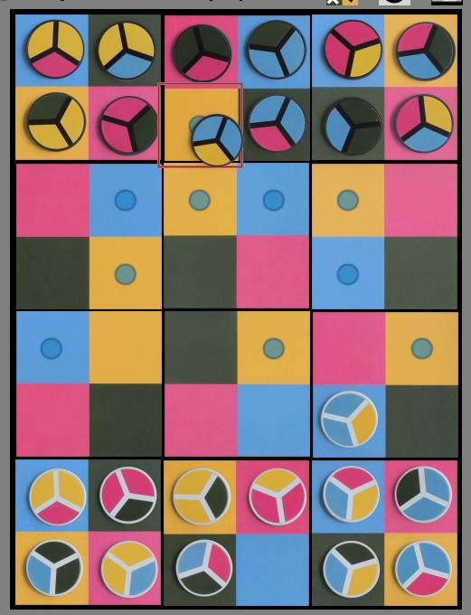
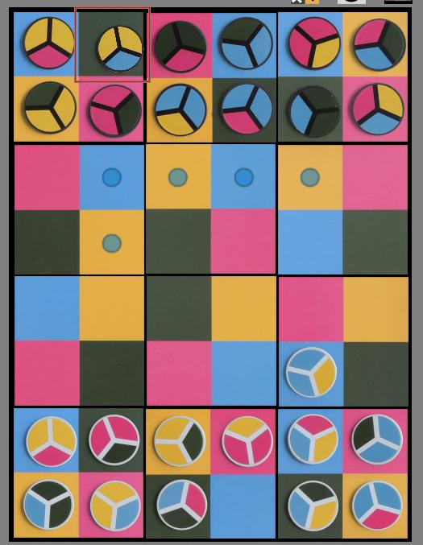
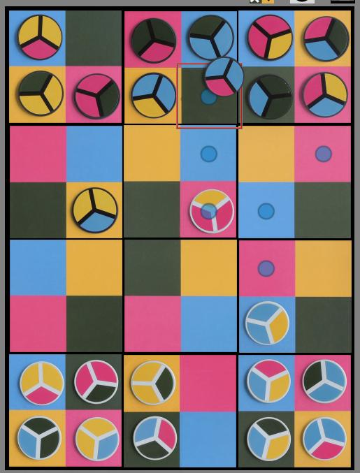

|
|
|
| Setup: The
white player, then the black player, arranges 6 randomly selected
tiles to form their side of a 6x9 board. The only
restriction is that the row closest to the player must have at least
one square of each color. Place 12 of the 18 pieces in the first two rows of the board. The remaining pieces are the reserve and may be used during the game. On Boardspace, a valid baord is constructed automatically, but the players are able to rearrange the board before placing pieces on it. |  |
Movement: On their turn, a player may either
Movement rules, any piece can move up to 3 spaces, each movement must be to a square whose color matches one of the 3 colors on the piece.
|  |
|  |  |
| E-Mail: | Go to BoardSpace.net home page |